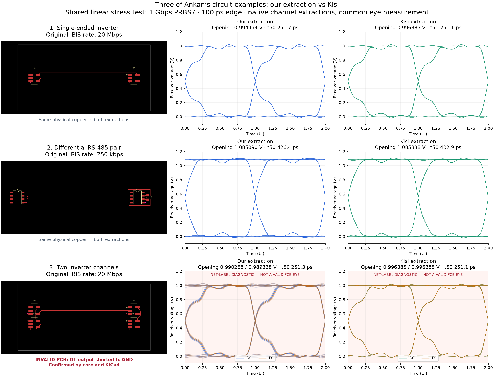
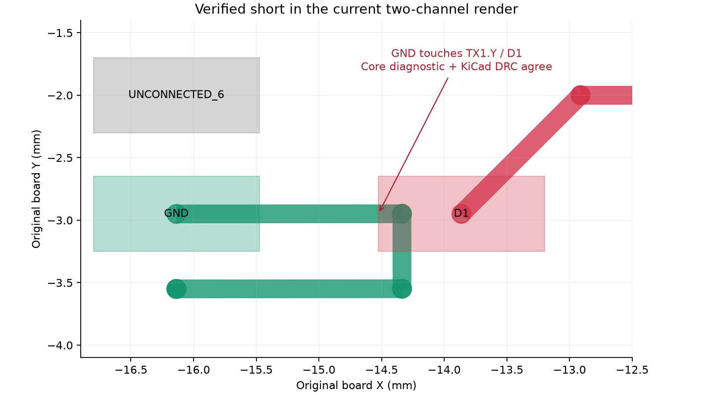
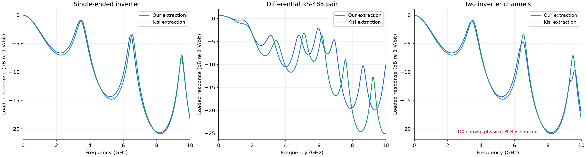
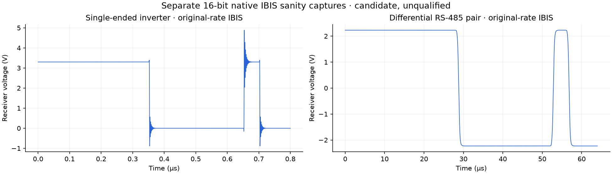

18 November 2026 · pinned PR #87 revision 374229d · Kisi 0.3.3 · fresh native runs
The single-ended channel agrees closely. The differential channel has similar eye openings but a repeatable 23.5 ps timing difference, and its Kisi SPICE export fails Kisi’s own strict check. The two-channel current render contains a verified output-to-ground short; its plausible simulated eyes are not valid physical-board results.
| Example | Our eye opening | Kisi eye opening | Loaded step delay: ours / Kisi | Finding |
|---|---|---|---|---|
| Single-ended inverter | 0.994994 V | 0.996385 V | 251.74 / 251.14 ps | Close agreement |
| Differential RS-485 pair | 1.085090 V | 1.085838 V | 426.43 / 402.93 ps | Timing and export issues |
| Two inverter channels | 0.990268 / 0.989338 V | 0.996385 / 0.996385 V | 251.28 / 251.14 ps | Diagnostic only — PCB short |
The common test is linear 1 Gbps PRBS7 with a 100 ps Gaussian edge, using 50 Ω source resistance and 1 pF per endpoint/leg. Single-ended receivers have 50 Ω loads; the differential case retains its 120 Ω differential termination. This is a channel stress test, not a claim that the original inverter or RS-485 chips support 1 Gbps. Eye synthesis and measurement use the same implementation for both independently extracted channels, with 127 bits and 256 samples/UI. Absolute amplitudes are retained. The differential nominal received swing is about 1.091 V because its source/load divider differs.

The eye openings differ by 1.39 mV, about 0.14% of the nominal 1 V swing. The loaded 50% step delays differ by 0.60 ps. At 1 GHz the loaded amplitudes are within roughly 0.15 dB. Doubling our spatial refinement changes the delay by 0.026 ps and the opening by 0.154 mV. These are useful regression comparisons, not external proof of physical accuracy.
Our refined loaded step delay is 426.43 ps; Kisi’s is 402.93 ps — a 23.50 ps difference, about 5.8% of Kisi’s delay. Our 2→4 spatial refinement changes delay by only 0.046 ps, so that refinement does not resolve the gap. The eye openings differ by only 0.75 mV, illustrating why rounded eye heights alone can hide timing/model disagreements.
Kisi removes the 120 Ω receiver resistor from its channel block and represents it as an RX termination; our model retains the resistor at its physical pads and keeps the stubs. The loading adapter explicitly restores a 120 Ω differential bridge for Kisi without double-counting our physical resistor. A separate diagnostic moved our resistor to the RX reference while retaining the copper stubs; the delay gap grew from 23.45 to 36.47 ps. That control was not used in the main comparison and did not explain the discrepancy. Field, pad/stub, dispersion and termination approximations need an independent reference before assigning the error to either tool.
Kisi’s SPICE export fails its own strict validator here. Against its native analytic channel, the exported ladder has 5.18% maximum step-response error and the compact model 5.21%, exceeding the validator’s 5% limit. The compact export differs by up to 3.41 dB in differential S21 over the 10 GHz band. Both exports remain passive, and compact vs ladder PRBS levels agree closely; those checks do not establish fidelity to the native channel. The main comparison uses native Kisi Touchstone, so this failed SPICE approximation does not contaminate the displayed eye.
D1 / TX1.Y is shorted to GND in the current render. Core emits an accidental-contact diagnostic before export. KiCad independently identifies two shorting-item contacts between U2 pad 4 (D1) and GND tracks. We kept that geometry unchanged. Our extraction pipeline accepts the records, and Kisi still gives D1 a green native eye criterion. A connectivity/shorts gate must precede either SI result.

The two-channel plots are explicitly net-label diagnostics. They assume the declared nets remain distinct, which the physical copper contradicts. Kisi exports its two lanes independently, so the comparison assembles those native two-port channels without cross-lane coupling. Our model includes that coupling. The two PRBS patterns are shifted by 31 UI to expose the modeling difference, but no physical crosstalk accuracy conclusion can be drawn from this shorted layout. Kisi’s separate crosstalk estimates are included in the evidence.

Our final plotted results use spatial refinement 4. The 2→4 refinement changes the complex loaded response by at most 0.0018 below 3 GHz; the full-band maximum reaches about 0.048 near 10 GHz for the single-ended case. Field-mesh convergence and physical sign-off are not established by this spatial test. Both native extraction matrices pass the recorded passivity/reciprocity checks. An independent PRBS-label check reproduces every reported eye height on the same sampling grid.
Eye definitions matter: these tables use absolute voltages and a common threshold-crossing metric. Kisi’s native check reports normalized height and a sampled contiguous-open-phase width, under its selected profile. Its se50/lvds profiles here supply benchmark metadata, not inverter or RS-485 compliance claims. Native checker values are retained separately; they are not silently substituted for the shared metrics.
Our unchanged pipeline also completed separate 16-bit native IBIS captures: 20 Mbps for the single-ended inverter (29,706 samples) and 250 kbps for the RS-485 pair (13,878 samples, three probes). Only recording duration was shortened; physical records were byte-identical. These captures retain the pipeline’s candidate-unqualified status. The two-channel IBIS run was blocked by the verified short. Kisi does not simulate the nonlinear IBIS buffers, so these traces are not presented as an apples-to-apples Kisi comparison.

The inputs are the current single-ended, differential and two-channel TSX examples from Ankan’s PR #87 (0hmX), pinned to 374229d3dd3ca4581053423604b715dfb11ac86b. All 360 archive files match their downloaded bytes after installation. The run uses the branch’s published core 0.0.2409, props 0.0.735 and circuit-json 0.0.552, installed with its frozen pnpm lockfile in an isolated directory. No solver physics source was modified.
The single-ended render matches the archived accepted-board identity exactly. The current differential and two-channel renders do not match their archived accepted-board hashes, so these are not bitwise replays of those historical captures. That mismatch is recorded rather than attributing every new result to the original historical board.
KiCad translation preserves rendered trace paths, pad positions and sizes, vias, pours and generated stackup. Only coordinate handedness/origin, conventional IC reference names and differential net naming are translated. The generated copper/dielectric stack totals 1.49 mm, despite the TSX nominal 1.6 mm; both tools use the actual generated stack. Mask thickness 20 µm, mask εr 3.3 / tanδ 0.025, laminate tanδ 0.02 and smooth copper are shared explicit assumptions. No routing repair, amplitude normalization, passivity projection or model fitting to the other tool was used.
This repository contains native channels, generated boards, solver outputs, validator failures, DRC reports, scripts, hashes and selected upstream example sources. Original manufacturer IBIS files and generated decks containing their tables are excluded. Native scientific output captures are included.
Kisi models and limits · Kisi’s native export validator and strict thresholds · Pinned upstream examples